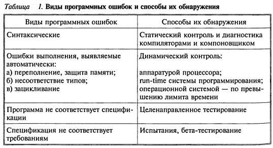
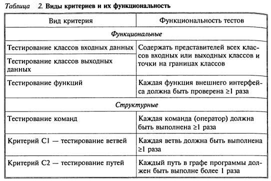
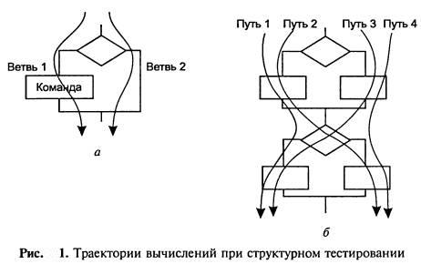
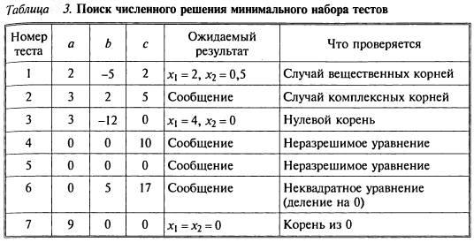

[ Тематический план ] [ Тестирование программного обеспечения в процессе внедрения и эксплуатации ] [ 1 ] [ 2 ] [ 3 ] [ 4 ] [ 5 ]
Термины и определения
Выполнение программы с целью обнаружения ошибок называется тестированием. Виды ошибок и
способы их обнаружения приведены в табл. 1

Эффективность контроля 1-го вида зависит и от языка, и
от компилятора. Контроль 2-го вида осуществляется с помощью исключений —
Exceptions и весьма полезен для проверки правдоподобности промежуточных
результатов. Тест — это набор контрольных входных данных совместно с
ожидаемыми результатами. В число входных
данных времязависимых программ
входят события и временные параметры. Ключевой вопрос
— полнота тестирования: какое количество каких тестов гарантирует, возможно, более полную проверку
программы?
Исчерпывающая проверка на всем множестве входных
данных недостижима. Пример: программа,
вычисляющая функцию двух переменных:
Y=f(X, Z). Если X, Y, Z — real, то полное число тестов
(232) 2= 264= 1031
Если на каждый тест тратить 1 мс, то 264 мс = = 800 млн лет.
Следовательно:
• в любой нетривиальной программе на любой стадии
ее готовности содержатся необнаруженные
ошибки;
• тестирование — технико-экономическая проблема, основанная на компромиссе время — полнота.
Поэтому нужно стремиться к возможно меньшему количеству хороших тестов с желательными свойствами.
Детективность: тест должен с большой
вероятностью обнаруживать возможные
ошибки
Покрывающая способность: один тест должен выявлять как можно
больше ошибок.
Воспроизводимость: ошибка должна выявляться независимо
от изменяющихся условий (например, от временных
соотношений) — это труднодостижимо для времязависимых программ, результаты которых часто невоспроизводимы.
Только на
основании выбранного критерия можно
определить тот момент времени, когда конечное множество тестов окажется достаточным для проверки программы с
некоторой полнотой (степень полноты, впрочем, определяется экспериментально). Используется два вида
критериев (табл. 2):
•
функциональные тесты
составляются исходя из спецификации
программы;
• структурные тесты составляются исходя из текста программы.


На рис. 1, а видно отличие тестирования команд (достаточен один тест) от С1 (необходимы два
теста как минимум).
Рисунок 1, б иллюстрирует различие С1 (достаточно
двух тестов, покрывающих пути 1, 4 или 2, 3) от С2 (необходимо четыре теста для всех четырех путей). С2 недостижим
в реальных программах из-за их цикличности, поэтому ограничиваются тремя путями для каждого цикла: 0, 1 и N повторений
цикла.
Остаются
проблемы назначения классов входных/выходных данных для функционального
тестирования и проектирования тестов для структурного тестирования. Классы, как
правило, назначаются исходя из семантики
решаемой задачи [6].
Рассмотрим пример. Найти минимальный набор тестов для программы
нахождения вещественных корней квадратного
уравнения ах2 + bх + с - 0.
Решение представлено в табл. 3.

Таким образом, для этой программы предлагается минимальный набор функциональных тестов,
исходя из 7 классов выходных данных.
Тестирование
«белого ящика» и «черного ящика»
В
терминологии профессионалов тестирования
(программного и некоторого аппаратного обеспечения) фразы тестирование «белого ящика» и тестирование
«черного ящика» относятся к тому, имеет ли разработчик тестов доступ к
исходному коду тестируемого ПО, или же тестирование выполняется через пользовательский интерфейс либо прикладной
программный интерфейс, предоставленный
тестируемым модулем.
При
тестировании «белого ящика» (англ. white-box testing, также говорят — прозрачного ящика)
разработчик теста имеет доступ к исходному коду и может писать код, который
связан с библиотеками тестируемого ПО.
Это типично для юнит-тестирования (англ. unit testing), при котором тестируются
только отдельные части системы. Оно обеспечивает то, что компоненты конструкции работоспособны и устойчивы до
определенной степени.
При
тестировании «черного ящика» (англ. black-box testing) тестировщик имеет доступ
к ПО только через те же интерфейсы, что и заказчик или пользователь, либо через
внешние
интерфейсы, позволяющие другому компьютеру либо
другому процессу подключиться к системе для тестирования. Например, тестирующий модуль может виртуально нажимать
клавиши или кнопки мыши в тестируемой программе с помощью механизма взаимодействия процессов с уверенностью в
том, что эти события вызывают тот же
отклик, что и реальные нажатия клавиш и кнопок мыши.
Если
альфа- и бета-тестирование относятся к стадиям до выпуска продукта (а также, неявно, к объему
тестирующего сообщества и ограничениям
на методы тестирования), тестирование «белого ящика» и «черного ящика» имеет
отношение к способам, которыми
тестировщик достигает цели.
Бета-тестирование в целом ограничено техникой «черного ящика» (хотя
постоянная часть тестировщиков обычно
продолжает тестирование «белого ящика» параллельно бета-тестированию). Таким образом, термин
бета-тестирование может указывать на
состояние программы (ближе к выпуску, чем альфа) или может указывать на
некоторую группу тестировщиков и процесс, выполняемый этой группой. Итак,
тестировщик может продолжать работу по
тестированию «белого ящика», хотя ПО уже «в бете» (стадия), но в этом случае он
не является частью бета-тестирования
(группы/процесса).